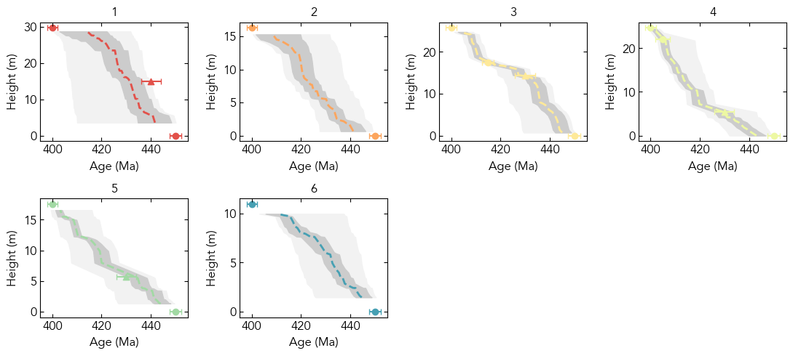

Figure 7: Synthetic single-proxy inference#
This notebook can be used to:
Load and plot the synthetic d13C and age constraint data (as in Fig. 7a)
Build and sample the inference model
Load the inference results from the model run used to produce Fig. 7b-c
Visualize the results using functions from
stratmc.plottingReproduce Fig. 7 using these data
%load_ext autoreload
%autoreload 2
import arviz as az
import matplotlib.pyplot as plt
import numpy as np
from matplotlib import rcParams
import stratmc
rcParams["font.family"] = "sans-serif"
rcParams["font.sans-serif"] = ["Avenir"]
rcParams.update({"text.usetex": False})
import warnings
from scipy.ndimage import gaussian_filter as gaussian
from scipy.stats import gaussian_kde
warnings.simplefilter(action="ignore", category=FutureWarning)
The autoreload extension is already loaded. To reload it, use:
%reload_ext autoreload
Synthetic d13C signal and data#
age_vector = np.arange(400, 450, 0.25)
amplitude = [3, -4, 6, -2]
d13c_signal = stratmc.synthetics.make_excursion(
age_vector,
amplitude,
excursion_duration=[10, 8, 10, 5],
rising_time=[0.3, 0.7, 0.9, 0.3],
smooth=True,
smoothing_factor=2,
rate_offset=True,
seed=7,
)
d13c_signal = gaussian(np.flip(d13c_signal), 3)
signal_dict = {}
signal_dict["d13c"] = d13c_signal
fig = plt.figure(figsize=(5, 3))
ax = fig.gca()
ax.plot(age_vector, d13c_signal, color="indianred")
ax.invert_xaxis()
ax.set_xlabel("Age (Ma)")
ax.set_ylabel("d13C");
# Load the synthetic proxy observations
sample_df = stratmc.data.load_object("data/Fig7_synthetic_sample_df_single_proxy")
ages_df = stratmc.data.load_object("data/Fig7_synthetic_ages_df_single_proxy")
sections = np.unique(sample_df["section"].values)
# Plot the d13C observations with stratmc.plotting.proxy_strat
fig = stratmc.plotting.proxy_strat(sample_df, ages_df)
Synthetic lithostratigraphy (Fig. 7a)#
facies_colors = {}
facies_widths = {}
facies_colors["limestone"] = "#F4F2F3"
facies_colors["diamictite"] = "gray"
facies_widths["limestone"] = 0.75
facies_widths["diamictite"] = 1
section_facies = {}
section_facies_thicknesses = {}
# section 1
section_facies["1"] = ["limestone"]
section_facies_thicknesses["1"] = [np.max(ages_df[ages_df["section"] == "1"]["height"])]
# section 2
section_facies["2"] = ["limestone"]
section_facies_thicknesses["2"] = [np.max(ages_df[ages_df["section"] == "2"]["height"])]
# section 3
# diamictite at 14.35-15.9 meters
section_facies["3"] = ["limestone", "diamictite", "limestone"]
section_facies_thicknesses["3"] = [
14.35,
15.9 - 14.35,
np.max(ages_df[ages_df["section"] == "3"]["height"]) - 15.9,
]
# section 4
# diamictite at 5.4-7.1 meters
section_facies["4"] = ["limestone", "diamictite", "limestone"]
section_facies_thicknesses["4"] = [
5.4,
7.1 - 5.4,
np.max(ages_df[ages_df["section"] == "4"]["height"]) - 7.1,
]
# section 5
# diamictite at 5.7-7.9 meters
section_facies["5"] = ["limestone", "diamictite", "limestone"]
section_facies_thicknesses["5"] = [
5.7,
7.9 - 5.7,
np.max(ages_df[ages_df["section"] == "5"]["height"]) - 7.9,
]
# section 6
section_facies["6"] = ["limestone"]
section_facies_thicknesses["6"] = [np.max(ages_df[ages_df["section"] == "6"]["height"])]
fs = 10
d13c_sections = np.unique(sample_df["section"][~np.isnan(sample_df["d13c"])])
widths = [0.4, 1] * 6
fig, ax = plt.subplots(
1,
2 * 6,
figsize=(7.5, 2.5),
sharey=False,
sharex=False,
gridspec_kw={"width_ratios": widths},
)
for i in np.arange(len(d13c_sections)):
section = d13c_sections[i]
section_ages_df = ages_df[
(ages_df["section"] == section)
& (~np.isnan(ages_df["age"]))
& (~ages_df["intermediate detrital?"])
]
section_df = sample_df[sample_df["section"] == section]
sec_sample_ages = sample_df[sample_df["section"] == section]["age"].values
sec_sample_heights = sample_df[sample_df["section"] == section]["height"].values
sec_radio_ages = section_ages_df["age"].values
sec_ages_comb = np.concatenate([sec_radio_ages, section_df["age"]])
heights_comb = np.concatenate([section_ages_df["height"], section_df["height"]])
heights_comb_sort_idx = np.argsort(heights_comb)
sec_ages_comb = sec_ages_comb[heights_comb_sort_idx]
heights_comb = heights_comb[heights_comb_sort_idx]
d13c_section_interp = np.interp(sec_ages_comb, age_vector, d13c_signal)
new_heights = np.linspace(np.min(heights_comb), np.max(heights_comb), 200)
sec_age_interp = np.interp(new_heights, heights_comb, sec_ages_comb)
d13c_section_interp = np.interp(sec_age_interp, age_vector, d13c_signal)
ax[i * 2 + 1].plot(d13c_section_interp, new_heights, c="indianred", zorder=0)
ax[i * 2 + 1].scatter(
sample_df[sample_df["section"] == section]["d13c"],
sample_df[sample_df["section"] == section]["height"],
color="indianred",
edgecolor="k",
s=10,
lw=0.5,
clip_on=False,
zorder=10,
)
section_ages_df = ages_df[ages_df["section"] == section]
for j in np.arange(section_ages_df.shape[0]):
if j == 0: # base of sections
age_color = "#87BED5"
if j == section_ages_df.shape[0] - 1: # top of sections
age_color = "mediumseagreen"
if list(section_ages_df.index)[j] == 1:
age_color = "#7C78A0" # purple DZ
if list(section_ages_df.index)[j] in [6, 11, 16]: # diamictite base
age_color = "gray"
if list(section_ages_df.index)[j] == 8:
age_color = "#FFEB7F" # yellow - section 3 depositional age
if list(section_ages_df.index)[j] == 13: # orange - section 4 depositional age
age_color = "#F4A27C"
if list(section_ages_df.index)[j] in [7, 12, 17]: # diamictite top
age_color = "firebrick"
if section_ages_df.iloc[j]["intermediate detrital?"]:
ax[i * 2].scatter(
0,
section_ages_df.iloc[j]["height"],
color=age_color,
marker="^",
edgecolor="k",
s=30,
lw=0.5,
zorder=10,
clip_on=False,
)
else:
ax[i * 2].scatter(
0,
section_ages_df.iloc[j]["height"],
color=age_color,
edgecolor="k",
marker="s",
s=25,
lw=0.5,
zorder=10,
clip_on=False,
)
ax[i * 2].set_xlim([0, 1])
current_base = 0
for facies, thickness in zip(
section_facies[section], section_facies_thicknesses[section]
):
ax[i * 2].barh(
y=current_base,
width=facies_widths[facies],
height=thickness,
linewidth=0.5,
edgecolor="k",
align="edge",
color=facies_colors[facies],
clip_on=False,
)
current_base += thickness
ax[i * 2].set_yticklabels([])
_ = [ax[i].sharex(ax[1]) for i in [3, 5, 7, 9, 11]]
_ = [ax[i].sharey(ax[0]) for i in np.arange(1, 12)]
ax[1].set_xlim([np.min(sample_df["d13c"]) - 0.1, np.max(sample_df["d13c"]) + 0.1])
ax[1].set_ylim([0, np.max(ages_df["height"])])
for i in [0, 2, 4, 6, 8, 10]: # [1, 3, 5, 7, 9, 11]:#[0, 2, 4, 6, 8, 10]:
ax[i].spines["top"].set_visible(False)
ax[i].spines["right"].set_visible(False)
ax[i].spines["bottom"].set_visible(False)
ax[i].spines["left"].set_visible(False)
ax[i].set_xlim([0, 1])
ax[i].set_xticks([])
for i in [1, 3, 5, 7, 9, 11]:
ax[i].spines["top"].set_visible(False)
ax[i].spines["right"].set_visible(False)
ax[i].spines["bottom"].set_visible(True)
ax[i].spines["left"].set_visible(False)
ax[i].set_xlabel(r"$\delta^{13}$C ()", fontsize=fs)
for axis in ax.ravel():
axis.set_axisbelow(True)
axis.set_yticks([])
axis.tick_params(labelsize=fs)
ax[0].tick_params(labelsize=fs)
ax[0].spines["left"].set_visible(True)
ax[0].set_ylabel("Height (m)", fontsize=fs)
ax[0].set_yticks([0, 10, 20, 30])
ax[0].set_yticklabels([0, 10, 20, 30])
for i in np.arange(1, 12):
[t.set_color("none") for t in ax[i].yaxis.get_ticklabels()]
ax[i].tick_params(axis="y", color="none")
Build the inference model and sample the posterior#
To load the results for the inference used to produce Fig. 7, skip to Load the inference results.
model, gp = stratmc.model.build_model(
sample_df,
ages_df,
proxies=["d13c"],
ls_dist="Wald",
ls_min=3, # minimum RBF kernel lengthscale
ls_mu=10, # mean of Wald distribution used as RBF kernel lengthscale prior
ls_lambda=25, # lambda of Wald distribution used as RBF kernel lengthscale prior
offset_type="section", # per-section offset with default prior
noise_type="section", # per-section noise with default prior
)
Using radiometric age priors specified in ages_df for section 3
Using radiometric age priors specified in ages_df for section 4
Using radiometric age priors specified in ages_df for section 5
# vector of ages at which to evaluate the proxy sigal
age_min = 400
age_max = 450
predict_ages = np.arange(age_min, age_max + 0.5, 0.5)[:, None]
extension = "Fig7_synthetic_single_proxy"
# this posterior is slightly tricky due to the limiting age constraints, so we increased the number of tune steps to 2,000 to improve sampling behavior
full_trace = stratmc.inference.get_trace(
model,
gp,
predict_ages,
sample_df,
ages_df,
proxies=["d13c"],
name=extension,
chains=4,
draws=1000,
tune=2000,
target_accept=0.9,
save = False
)
Load the inference results#
Load the trace used to produce Fig. 7b-c
full_trace = stratmc.data.load_trace("traces/" + "Fig7_synthetic_single_proxy")
Plot the inference results with stratmc.plotting#
# Plot the proxy signal inference
fig = stratmc.plotting.proxy_inference(sample_df, ages_df, full_trace, plot_data=True)
# Plot the posterior age model for each section
fig = stratmc.plotting.age_height_model(sample_df, ages_df, full_trace, legend=False)

# Map the proxy signal back to height in each section using the most likely posterior age models
fig = stratmc.plotting.section_proxy_signal(full_trace, sample_df, ages_df)
# Take a closer look at Section 3
fig = stratmc.plotting.section_summary(sample_df, ages_df, full_trace, section="3")
Fig. 7b-c#
mosaic = """
111111222
111111222
"""
fs = 10
fig, ax = plt.subplot_mosaic(
mosaic, figsize=(7, 2.5), sharex=False, sharey=False, constrained_layout=False
)
# plot the posterior d13C signal with 68 and 95% envelopes
ages = full_trace.X_new.X_new.values
proxy_pred = az.extract(full_trace.posterior_predictive)["f_pred_" + "d13c"].values
hi = np.percentile(proxy_pred, 97.5, axis=1).flatten()
lo = np.percentile(proxy_pred, 2.5, axis=1).flatten()
ax["1"].fill_between(
ages.ravel(),
hi,
lo,
color="white",
linestyle="--",
edgecolor="none",
alpha=1,
lw=0, # 1.5
zorder=1,
)
ax["1"].fill_between(
ages.ravel(),
hi,
lo,
color="black",
linestyle="--",
edgecolor="none",
alpha=0.1,
lw=0, # 1.5
zorder=2,
)
ax["1"].fill_between(
ages.ravel(),
hi,
lo,
color="none",
label="95% envelope",
linestyle="--",
edgecolor="gray",
alpha=1,
lw=0.75,
zorder=3,
)
hi = np.percentile(proxy_pred, 100 - 16, axis=1).flatten()
lo = np.percentile(proxy_pred, 16, axis=1).flatten()
ax["1"].fill_between(
ages.ravel(),
hi,
lo,
color="black",
edgecolor="none",
alpha=0.1,
lw=0, # 1.5
zorder=4,
)
ax["1"].fill_between(
ages.ravel(),
hi,
lo,
color="none",
label="68% envelope",
edgecolor="gray",
alpha=1,
lw=0.75, # 1.5
zorder=5,
)
dy = np.linspace(np.min(proxy_pred), np.max(proxy_pred), 200)
max_like = np.zeros(ages.size)
for i in np.arange(ages.size):
time_slice = proxy_pred[i, :]
max_like[i] = dy[np.argmax(gaussian_kde(time_slice, bw_method=1)(dy))]
max_like = gaussian(max_like, 2)
ax["1"].plot(
ages.ravel(),
max_like,
color="gray",
linestyle="solid",
lw=1.5,
zorder=6,
label=r"Most likely $\delta^{13}$C",
)
ax["1"].plot(age_vector, d13c_signal, color="indianred", label="True Signal", zorder=10)
ax["1"].invert_xaxis()
ax["1"].set_xlim([np.max(ages) + 2.5, np.min(ages) - 2.5])
ax["1"].set_ylabel(r"$\delta^{13}$C ()", fontsize=fs)
ax["1"].set_xlabel("Age (Ma)", fontsize=fs)
for k in list(ax.keys()):
ax[k].tick_params(direction="in", labelsize=fs)
ax[k].set_axisbelow(True)
ax[k].grid(color=(0.95, 0.95, 0.95), linewidth=0.5, linestyle="solid", zorder=-1)
# example age-height model for section 3
section = "3"
section_df = sample_df[sample_df["section"] == section]
sample_heights = section_df["height"]
age_heights = ages_df[
(ages_df["section"] == section)
& (~ages_df["intermediate detrital?"])
& (~ages_df["intermediate intrusive?"])
]["height"]
sample_age_var = str(section) + "_ages"
radiometric_age_var = str(section) + "_radiometric_age"
comb = np.concatenate([sample_heights, age_heights])
sort_idx = np.argsort(comb)
sample_posterior = az.extract(full_trace.posterior)[str(section) + "_ages"].values
age_posterior = az.extract(full_trace.posterior)[
str(section) + "_radiometric_age"
].values
posterior_stacked = np.vstack([sample_posterior, age_posterior])[sort_idx, :]
lo = np.percentile(posterior_stacked, 2.5, axis=1).flatten()
hi = np.percentile(posterior_stacked, 97.5, axis=1).flatten()
ax["2"].fill_betweenx(
comb[sort_idx],
hi,
lo,
color="white",
linestyle="--",
edgecolor="none",
alpha=1,
lw=0, # 1.5
zorder=1,
)
ax["2"].fill_betweenx(
comb[sort_idx],
hi,
lo,
color="black",
linestyle="--",
edgecolor="none",
alpha=0.1,
lw=0, # 1.5
zorder=2,
)
ax["2"].fill_betweenx(
comb[sort_idx],
hi,
lo,
color="none",
label="95% envelope",
linestyle="--",
edgecolor="gray",
alpha=1,
lw=0.75, # 1.5
zorder=3,
)
hi = np.percentile(posterior_stacked, 100 - 16, axis=1).flatten()
lo = np.percentile(posterior_stacked, 16, axis=1).flatten()
ax["2"].fill_betweenx(
comb[sort_idx],
hi,
lo,
color="black",
edgecolor="none",
alpha=0.1,
lw=0, # 1.5
zorder=4,
)
ax["2"].fill_betweenx(
comb[sort_idx],
hi,
lo,
color="none",
label="68% envelope",
edgecolor="gray",
alpha=1,
lw=0.75, # 1.5
zorder=5,
)
max_like = np.zeros(posterior_stacked.shape[0])
for j in np.arange(posterior_stacked.shape[0]):
sample_ages = posterior_stacked[j, :]
dx = np.linspace(np.min(sample_ages), np.max(sample_ages), 1000)
max_like[j] = dx[np.argmax(gaussian_kde(sample_ages, bw_method=1)(dx))]
label = "_nolegend_"
ax["2"].plot(
max_like,
comb[sort_idx],
color="gray",
label="Most likely age model",
lw=1.5,
linestyle="solid",
zorder=3,
)
ax["2"].errorbar(
ages_df["age"][ages_df["section"] == section],
ages_df["height"][ages_df["section"] == section],
xerr=2 * ages_df["age_std"][ages_df["section"] == section],
color="k",
fmt="none",
capsize=2,
zorder=5,
clip_on=False,
)
section_ages_df = ages_df[ages_df["section"] == section]
ax["2"].scatter(
section_ages_df["age"][
(~section_ages_df["intermediate intrusive?"])
& (~section_ages_df["intermediate detrital?"])
],
section_ages_df["height"][
(~section_ages_df["intermediate intrusive?"])
& (~section_ages_df["intermediate detrital?"])
],
color="k",
marker="s",
lw=0.5,
edgecolor="k",
s=25,
zorder=6,
label="Age constraint ($\pm2\sigma$)",
clip_on=False,
)
if section_ages_df["age"][section_ages_df["intermediate intrusive?"]].shape[0] > 0:
ax["2"].scatter(
section_ages_df["age"][section_ages_df["intermediate intrusive?"]],
section_ages_df["height"][section_ages_df["intermediate intrusive?"]],
marker=">",
s=25,
zorder=5,
color="k",
label="Intrusive Age ($\pm2\sigma$)",
clip_on=False,
)
if section_ages_df["age"][section_ages_df["intermediate detrital?"]].shape[0] > 0:
ax["2"].scatter(
section_ages_df["age"][section_ages_df["intermediate detrital?"]],
section_ages_df["height"][section_ages_df["intermediate detrital?"]],
marker="^",
s=30,
zorder=6,
lw=0.5,
color="black",
label="Detrital Age ($\pm2\sigma$)",
clip_on=False,
)
uniform_lower = section_ages_df[section_ages_df["distribution_type"] == "Uniform"][
"param_1"
].values
uniform_upper = section_ages_df[section_ages_df["distribution_type"] == "Uniform"][
"param_2"
].values
uniform_height = section_ages_df[section_ages_df["distribution_type"] == "Uniform"][
"height"
].values
ax["2"].errorbar(
(uniform_lower + uniform_upper) / 2,
uniform_height,
zorder=5,
xerr=(uniform_upper - uniform_lower) / 2,
capsize=2,
color="k",
fmt="none",
clip_on=False,
)
ax["2"].scatter(
section_df["age"],
section_df["height"],
color="indianred",
edgecolor="k",
s=10,
lw=0.5,
zorder=10,
label="True sample age",
)
ax["2"].invert_xaxis()
ax["2"].yaxis.tick_right()
ax["2"].yaxis.set_label_position("right")
ax["2"].axis("tight")
ax["2"].set_xlabel("Age (Ma)", fontsize=fs)
ax["2"].set_ylabel("Height (m)", fontsize=fs)
ax["2"].tick_params(
bottom=True, top=False, left=False, right=True, direction="in", labelsize=fs
)
ax["2"].set_xticks([450, 425, 400])
ax["2"].set_ylim([0, np.max(ages_df["height"][ages_df["section"] == section])])
fig.tight_layout()